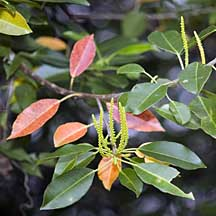
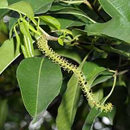
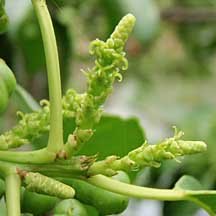
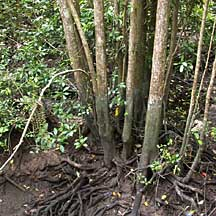
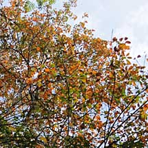
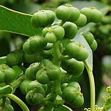

|
|
| plants text index | photo index |
| mangroves |
| Buta-buta or Blind-your-eye Excoecaria agallocha Family Euphorbiaceae updated Jan 2013 Where seen? This tree with small neat leaves can be spectacular when in male flower bloom, or when the leaves turn red before dropping off. They are quite commonly seen on our Northern shores. Corners recorded them as "locally common, as in Kranji Forest Reserve by the main road" where "they give a beautiful display of red and yellow autumn tints" ostensibly when the leaves fall during dry weather. According to Hsuan Keng, it was common in mangroves including Kranji, Changi and Tuas. The tree grows on both muddy and stony soil, with its roots spreading. It rarely seen on sandy shores. It requires freshwater input for a large part of the year and is commonly found on the landward margin of mangroves. The milky sap or latex that exudes from broken leaves, bark and twigs is poisonous and can blister skin, hurt eyes and may even cause temporary blindness. 'Buta' means 'blind' in Malay. Features: The tree grows to 15m tall sometimes branched at the base, thus forming multiple trunks. Roots run along the ground surface and often knotted and covered with lenticels. Tomlinson notes that the tree does not have root systems obviously specialised for mangroves and that it is also found to an elevation of 400m and he says they thus cannot be regarded as an exclusively mangrove tree. Bark grey, smooth but warty, becoming fissured. Lenticels are prominent on young twigs. Leaves thick, oval and pointed (5-10cm long), arranged alternately in a spiral. Young leaves are pink, old leaves turn yellow then red before dropping off. Leaves usually drop off after dry weather. Flowers are tiny (less than 1mm). Trees bear either male or female flowers, never both. Male flowers start as upright narrow cones when young and as they develop, elongate into longer spikes (5-10cm) that eventually form drooping yellow tassels. Male flowers are said to be "very scented". Female flowers appear in shorter spikes. According to Tomlinson the flowers are pollinated by insects as the pollen is sticky. Bees are common visitors and may be the chief pollinators. The fruits are small (less than 1cm) three-lobed, green turning black as they ripen into dry capsules. Each capsule is made up of three portions, containing tiny dark to black seeds. The colourful Mangrove shield bug (Calliphara nobilis) feeds on the seeds of this tree and is often seen in large numbers when the tree is fruiting. It is the preferred local food plant for the caterpillars of the moths, Achaea janatas, Iscadia pulchra, Selepa celtis, and of the genus Archips, Phyllocnistis, and Sauris. Human uses: According to Burkill, the timber is much used in some places for firewood and to make small articles. It is tricky to cut down the tree as the spattering of the milky sap can blister bare skin and cause eye damage. Experienced wood cutters first remove the bark before felling the tree. The latex is used as a fish poison as well as in dart poison. Various traditional medicinal uses are made of the bark, leaves and roots. According to Wee, the plant contains behenic acid. The Burmese used the leaves to treat epilepsy, in the Solomon Islands the latex is taken with coconut milk as a powerful purgative and an emetic, and oil distilled from the wood is used by the Malays to treat itching and skin infections. According to Giersen, it is not used as firewood as it produces an unpleasant smoke. But the wood is used to make matchsticks in the Philippines, also sold as aromatic wood, and is considered useful for carving. The roots are used to treat toothache and swellings. |
 Red leaves and male flowers. Sungei Buloh Wetland Reserve, Dec 03  Male flowers. Kranji Canal, Mar 00  Female flowers. Kranji Canal, Mar 09  Often with multiple trunks. No specialised roots. Sungei Buloh Wetland Reserve, Jan 02 |
|
 Leaves turning red at the same time. Sungei Buloh, Sep 09 |
 Fruits. Kranji Canal, Mar 09 |
| Buta-buta trees on Singapore shores |
| Photos of Buta-buta for free download from wildsingapore flickr |
| Distribution in Singapore on this wildsingapore flickr map |
|
Links
References
|
|
|